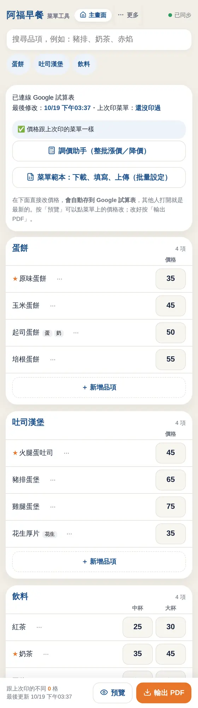
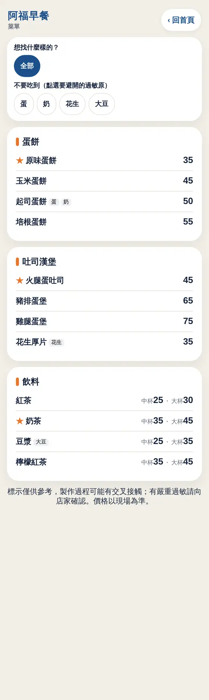
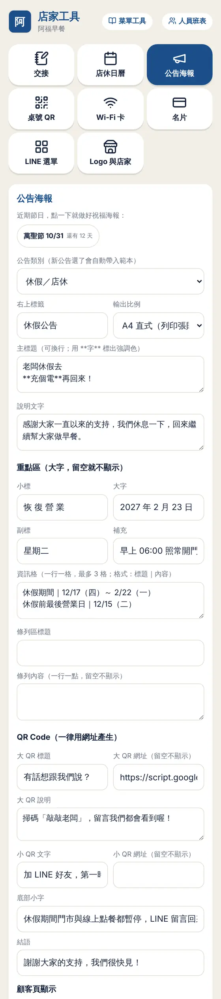
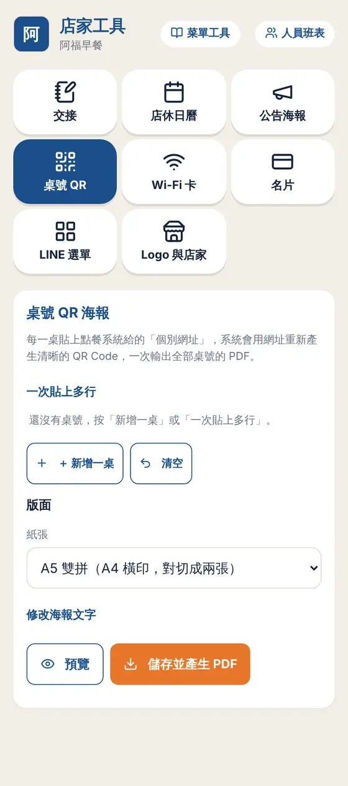
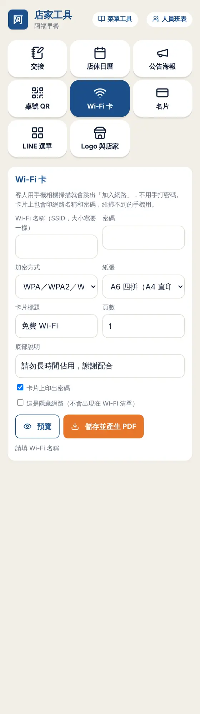
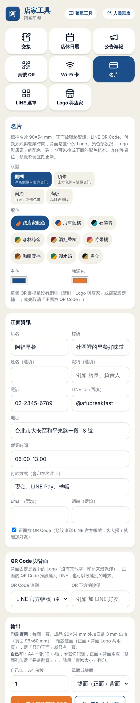
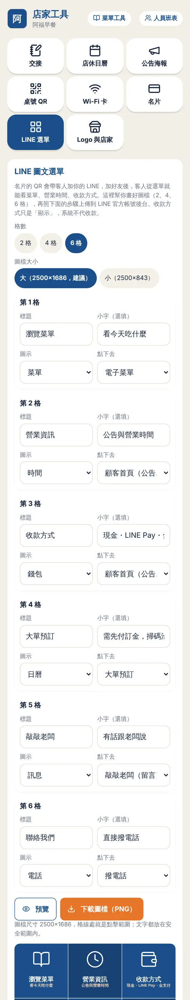

2.1
改價格
在手機上直接改，不用再改 Excel。
- 主畫面按「菜單改價」。
- 點價格欄直接輸入新價格，系統約 1 秒自動存到你的 Google 試算表，不用按儲存。
- 用上方搜尋框或分類標籤快速找到品項。
- 下方會顯示「跟上次印的菜單不同 N 格」，改了哪些一目了然。
小提醒其他夥伴的手機約 15 秒自動同步，不會互相蓋掉。

2.2
新增、隱藏與標示品項
品項多的時候，管理起來要輕鬆。
- 每個分類最下面按「＋ 新增品項」，填名稱和價格。
- 品項右邊的「⋯」可以：標「推薦」（菜單上會有星號）、隱藏（不印也不顯示給顧客）、加附餐說明。
- 同一個選單可以設過敏原與素食標示：蛋、奶、花生、堅果、麩質、大豆、甲殼、魚、芝麻、素、純素、辣，共 12 種，印在菜單上，也讓顧客篩選。
- 右上角「分類」可以改分類名稱、增減分類、設定價格欄（例如「中杯,大杯」），也有早餐店、飲料店、小吃店的範本。
2.3
調價助手
食材漲價時，一次調整整批價格。
- 按「調價助手」。
- 選要調的分類（或全部）、選「加減金額」或「加減百分比」、填數字，選取整到 5 或 10 元。
- 畫面會逐項列出「舊價 → 新價」，可以取消不想動的品項。
- 確認後按套用；錯了可以一鍵復原。輸出新菜單時，變動的價格會用橘色底標出來。
小提醒調完價記得把新菜單輸出，或重新貼到門口；每次改價都會自動留下紀錄（誰、何時、舊價、新價）。
2.4
菜單範本批量設定
品項很多、或想用 Excel 整理時，用範本一次建好。
- 按「菜單範本」→「下載範本」，用 Excel 或 Google 試算表填：分類、品項、價格、標示。
- 也可以「匯出現有菜單」，改好價格再上傳。
- 上傳後系統會先檢查並列出有問題的列（例如價格不是數字），你確認再寫入。
小提醒上傳不會刪掉你現有的品項，只會新增或更新價格。
2.5
輸出 A3 菜單
按一個鍵，得到排好版的 A3 菜單 PDF。
- 改好價格後按「預覽」，可以直接點菜單上的價格再修改。
- 按「輸出 PDF」。系統自動把品項平均分成四欄、拉齊留白。
- 品項太多時先自動縮小列高；還放不下，會把整個分類排到背面（也可以勾「只印單面」）。
- 每次輸出版本號自動加一，並記下相較上一版變動了哪些項目。
2.6
顧客電子菜單
客人掃 QR Code 就能看最新價格。
- 顧客網址在「帳號與訂閱」可以複製（格式是 …?s=店家代碼&p=menu）。
- 到「行銷」的桌號 QR 做成桌上的 QR 海報。
- 顧客可以篩選素食、純素、不辣，並避開指定過敏原；價格永遠是最新的，不用重印 QR。
小提醒標示僅供參考；有嚴重過敏的客人，請提醒他向店家確認。

2.7
公告海報
臨時公休、活動、節慶，三分鐘做好一張海報，印得出也貼得上社群。
- 主畫面「行銷」→「公告海報」。
- 選類別：臨時公休、休假、營業時間調整、活動優惠、節慶祝福、新品上市、徵才、一般公告。
- 選輸出比例：A4（印出來貼門口）、1:1（FB、LINE 貼文）、9:16（限時動態）。店家 Logo 會自動帶入。
- 套用範本後改文字；內容多會自動縮字，保證一頁。14 個節日會自動帶出下一次日期。
- 按「預覽」確認，再按「儲存並產生 PDF」，或按「下載圖片（PNG）」直接傳到 LINE、FB。
- 勾「顧客頁顯示」，顧客打開店家頁面就會看到這則公告。
小提醒公告可以重複編輯；已經產生過的海報會留在「已儲存的公告」。

2.8
桌號 QR
桌上、候位、外帶，一次印好。
- 按「桌號 QR」，貼上多桌網址（一行一桌），系統自動編號並防止重複。
- 選類型：桌號點餐、候位點餐、外帶自取；選紙張：A5 雙拼、A4、A6 四拼。
- 每張都有核對碼，印出來後可以掃一遍確認網址正確。
- 按「儲存並產生 PDF」。

2.9
Wi-Fi 卡
客人掃一下就連上網，不用再問密碼。
- 按「Wi-Fi 卡」，填網路名稱、密碼、加密方式（一般選 WPA）。
- 可以選要不要在卡片上印出密碼；有隱藏網路也能設定。
- 紙張選 A6 四拼（一張 A4 切四張）、A5 雙拼或 A4。
- 預覽沒問題就產生 PDF。
小提醒手機相機掃到會直接跳出「加入網路」。

2.10
名片
90×54 mm，正面放資訊與 LINE QR，背面是置中的 Logo。
- 按「名片」，選版型（4 種）和配色（預設跟店家配色，也有 8 組範本）。
- 填店名、姓名、職稱、電話、營業時間、付款方式（例如現金、LINE Pay、全支付）、地址、LINE。
- 正面的 QR Code 預設連到你的 LINE 官方帳號，客人掃了就加好友；也可以改連電子菜單、敲敲老闆、地圖或自訂網址。
- 背面固定是置中的 Logo，不放其他字。
- 輸出兩種：「印刷廠用」（含 3 mm 出血）；「A4 十張」（附裁切記號，自己印）。右邊可選「雙面」（正面＋Logo 背面，預設）或「只印正面」。
小提醒列印請選「實際大小」，不要選「縮放符合頁面」。

2.11
LINE 圖文選單
客人加 LINE 好友後，從選單看菜單、營業時間、收款方式。
- 主畫面「行銷」→「名片」旁的「LINE 選單」分頁。
- 選 2、4 或 6 格，選大圖（2500×1686，建議）或小圖。
- 每一格改標題、小字、圖示，並選「點下去」要去哪：電子菜單、顧客首頁、大單預訂、敲敲老闆、撥電話、自訂網址。
- 按「預覽」確認，按「下載圖檔（PNG）」。再照畫面下方的步驟，到 LINE 官方帳號後台上傳，並貼上各格連結（畫面有清單可複製）。
小提醒收款方式只是「顯示」，系統不代收款；大單需先付訂金，客人掃碼洽詢，由你自己收。
